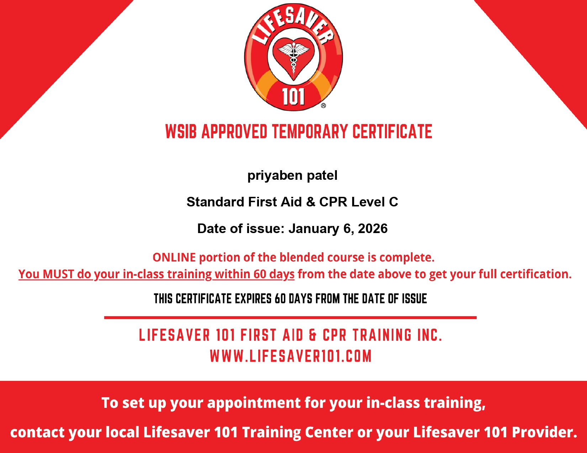
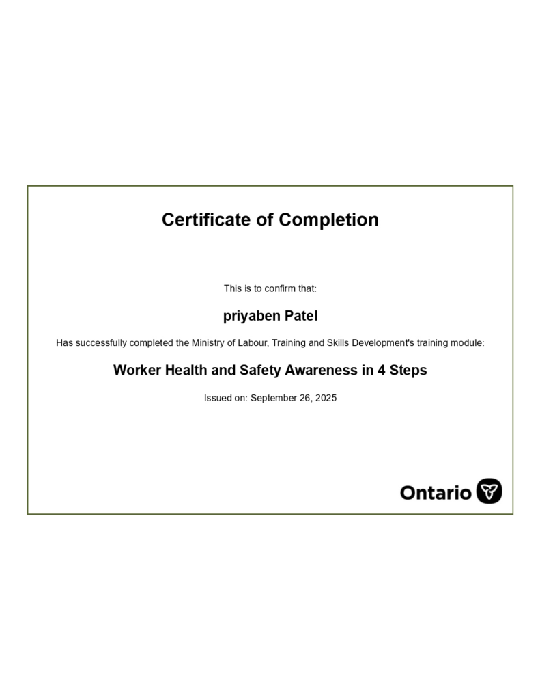
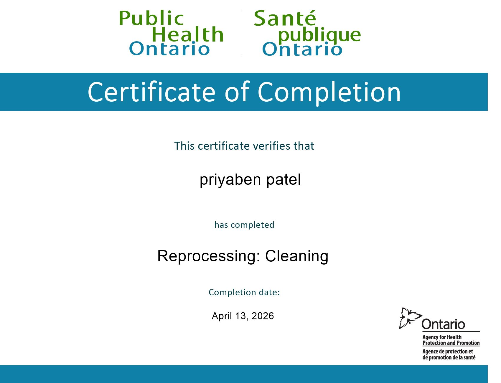

// Achievements
Certifications & Credentials
Verified certifications demonstrating continuous learning and professional growth.

First Aid & CPR Level C
Standard First Aid training certified in CPR Level C and automated external defibrillator (AED) usage.
Verify CredentialWHMIS 2015
Comprehensive training in Workplace Hazardous Materials Information System standards and safety protocols.
Verify Credential
Worker Health and Safety Awareness
Ministry-approved occupational health and safety training covering workplace rights and responsibilities.
Verify Credential
Reprocessing: Cleaning
Professional certification covering core principles, steps, and safety guidelines for the cleaning stage of medical device reprocessing.
Verify Credential.jpg)
Reprocessing: Disinfection
In-depth training on disinfection levels, chemical disinfectants, safety measures, and protocols for medical instruments.
Verify Credential.jpg)
Reprocessing: Steam Sterilization
Technical training on steam sterilization mechanics, autoclave operations, parameter monitoring, and quality assurance indicators.
Verify Credential.jpg)
Reprocessing: Transportation & Storage
Guidelines for safe handling, secure transit, environmental controls, and sterile storage of medical devices post-reprocessing.
Verify CredentialBachelor of Education (B.Ed.) — Science
Professional teacher education degree, specializing in science instruction and advanced communication methodologies.
View Certificate PDFMedical Laboratory Technologist (MLT)
Advanced clinical laboratory science diploma, specialized in hematology, clinical chemistry, and diagnostic procedures.
View Certificate PDFBachelor of Science (B.Sc.) — Microbiology
Higher education science degree, providing deep academic training in bacterial culture, virus mechanics, and microbiology analysis.
View Certificate PDFOntario Human Rights Code & AODA
Working Together: The Ontario Human Rights Code and the Accessibility for Ontarians with Disabilities Act compliance training.
View Certificate PDF